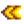

Anneaux
Sauter à la navigation
Sauter à la recherche
Les Anneaux sont des objets équipables qui donnent aux joueurs des avantages passifs. Deux anneaux peuvent être équipés à tout moment. Ils sont visibles dans l'inventaire du joueur. Certains des effets des bagues s'empilent.
| Image | Nom | Description | Effet(s) | Où trouver | Ingrédients | Prix d'achat | Prix de vente |
|---|---|---|---|---|---|---|---|
| Petite bague scintillante | Émets constamment une faible lumière. | Émet un cercle de lumière de 5 de rayon. L'effet de lumière s'empile avec d'autres bagues scintillantes. |
|
N/A | N/A | ||
| Bague scintillante | Émets constamment de la lumière. | Émet un cercle de lumière de 10 de rayon. L'effet de lumière s'empile avec d'autres bagues scintillantes. | N/A | N/A | |||
| Petite bague magnétique | Augmente légèrement votre rayon de collecte d’objets. | Augmente le |
|
N/A | N/A | ||
| Bague magnétique | Augmente votre rayon de collecte d’objets. | Augmente le |
N/A | N/A | |||
| Anneau charmeur de Slimes | Empêche les dégàts causés par les Slimes. | Empêche les dégâts de la part des Slimes et empêche le debuff "Englué(e)" | Récompense pour avoir éliminé 1000 Slimes à la Guilde des aventuriers | N/A | |||
| Anneau du guerrier | Insuffle occasionnellement au porteur de "l’énergie guerrière" après avoir tué un monstre. | A une chance de donner le |
Fabrication avec |
N/A | |||
| Bague vampirique | Octroie un peu de santé à chaque monstre tué. | Restaure 2 de Santé après avoir tué un monstre | Récompense pour avoir éliminé 200 Chauves-souris à la Guilde des aventuriers | N/A | |||
| Anneau sauvage | Octroie un boost de vitesse limité à chaque monstre tué. | Donne 2 secondes de |
Récompense pour avoir éliminé 150 Esprits des Ombres (Chaman des ombres / Brute des ombres) à la Guilde des aventuriers | N/A | |||
| Anneau de Yoba | Protège occasionnellement le porteur contre les dégâts. | A une chance de donner la |
Fabrication avec |
N/A | |||
| Anneau solide | Réduis de moitié la durée des effets négatifs. | La durée des Buffs négatifs (ex :, "Englué(e)", "Maudit(e)") est divisée par 2. | Fabrication avec |
N/A | |||
| Bague de cambrioleur | Les monstres ont plus de chance d’avoir du butin. | Les Monstres lâchent des butins plus souvent. Le jeu "retourne" deux fois sur le tableau des butins de monstres quand la bague est équipée afin que les objets aient une chance d'être lâchés deux fois. | Récompense pour avoir éliminé 500 esprits de poussière à la Guilde des aventuriers | N/A | |||
| Anneau d'iridium | Scintille, attire les objets et augmente les dégâts d'attaque de 10 %. | Se combine avec l'effet de la Bague scintillante, de la Bague magnétique et la Bague de rubis. |
|
N/A | |||
| Bague de jukebox | Joue des morceaux de musique aléatoire déjà entendues. | Inconnu | Impossible à obtenir | N/A | N/A | ||
| Bague en améthyste | Augmente la contre-attaque de 10 %. | Augmente le recul de 10%. | Achetable à la Guilde des aventuriers après avoir complétée la |
N/A | |||
| Bague en topaze | Augmente la précision d’attaque de 10 %. | Augmente la précision de l'arme de 10%. | Achetable à la Guilde des aventuriers après avoir complétée la |
N/A | |||
| Bague en aigue-marine | Augmente les chances de coup critique de 10 %. | Augmente de 10% les chances de coup critique (effet multiplicatif, comme la Profession Scout). | Achetable à la Guilde des aventuriers après avoir atteint le niveau 40 des Mines | N/A | |||
| Bague de jade | Augmente les chances de coup critique de 10 %. | Augmente la |
|
N/A | |||
| Bague d'émeraude | Augmente la vitesse d’attaque de l'arme de 10 %. | Augmente la  Vitesse de l'arme de 10%. | Achetable à la Guilde des aventuriers après avoir atteint le niveau 80 des Mines | N/A | |||
| Bague de rubis | Augmente l’attaque de 10 %. | Augmente |
Achetable à la Guilde des aventuriers après avoir atteint le niveau 80 des Mines | N/A | |||
| Bague de mariage | Une vieille tradition de Zuzu Ville... C’est pour demander la main d’une autre personne en mariage. | Vous permet de demander en Mariage un autre joueur dans une partie Multijoueur. | Acheter la recette de fabrication au Chariot de voyage pour |
N/A | N/A | ||
| Bague coquille de crabe | Le haut de la bague est fabriqué à partir d’une carapace de crabe enchantée. | Augmente la |
Récompense pour avoir éliminé 60 crabes rocheux à la Guilde des aventuriers | N/A | |||
| Bague en napalm | Après avoir éliminé un ennemi, vous le ferez exploser. | Les Monstres tués vont exploser, détruisant les objets proches | Récompense pour avoir éliminé 250 Serpents à la Guilde des aventuriers | N/A | |||
| Anneau épineux | Lorsque les ennemis vous blessent, ils subissent eux-mêmes des dégâts. | Les monstres subissent des dégâts égaux aux dégâts non atténués infligés au joueur. | Fabrication avec |
N/A | |||
| Bague porte-bonheur | On dit que l'emblème lunaire porte bonheur à celui qui le porte. | Augmente la |
Lâché comme butin spécial de monstres dans la Caverne du Crâne, ou rarement en Tamisant. | N/A | N/A | ||
| Anneau de café chaud | Augmente considérablement vos chances de trouver des boissons caféinées lorsque vous tuez des monstres. | Augmente les chances de trouver du Café et de la Triple dose d’espresso lorsque vous tuez des monstres. | Trouvé dans des coffres dans le Donjon du volcan | N/A | N/A | ||
| Anneau de protection | Cet anneau vous rendra invincible pendant un bref moment après avoir subi des dégâts. | Augmente le temps d'invincibilité après avoir subi des dégâts de 0,4 seconde | Trouvé dans des coffres dans le Donjon du volcan | N/A | N/A | ||
| Anneau mangeur d'âmes | Gagnez un peu d'énergie à chaque fois que vous tuez un monstre. | Gagnez 4 points d'énergie après avoir tué un monstre. | Trouvé dans des coffres dans le Donjon du volcan | N/A | N/A | ||
| Anneau du phoenix | Une fois par jour, récupérez des points de vie après avoir été assommé au combat. | Une fois par jour, retrouvez 50% de santé après avoir été assommé. | Trouvé dans des coffres dans le Donjon du volcan | N/A | N/A | ||
| Anneau d'immunité | Le dessus de l'anneau est fait en laine violette enchantée. | Augmente l' |
Butin spécial de monstres dans la Caverne du Crâne et au niveau 100+ des Mines | N/A | N/A | ||
| Anneau de pierre luisante | Émets une lumière constante et augmente également votre distance pour collecter des objets. | Une combinaison des bagues scintillante et magnétique: émet un cercle de lumière de 10 rayons et augmente le |
Fabrication avec |
N/A |
Note
- En faisant apparaître des bagues via le glitch d'ID des objets cela fera apparaître des bagues qui ne peuvent pas être équipées dans l'inventaire et par conséquent qui ne fonctionnent pas.
Historique
- 1.3 : Bague de mariage introduite.
- 1.4 : Ajoute les bagues coquille de crabe et en napalm.
- 1.5 : Ajout des anneaux épineux, porte-bonheur, de café chaud, de protection, mangeur d'âmes, du phoenix, d'immunité, et de pierre luisante.